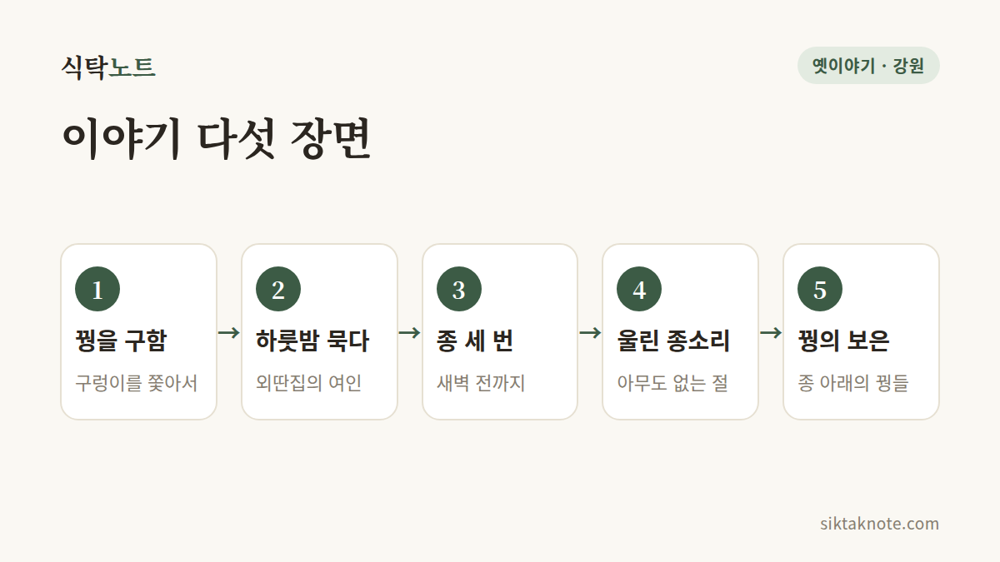

치악산 꿩의 보은 전설 — 종소리 세 번에 얽힌 이야기

3줄 요약
- 구렁이에게서 꿩 가족을 구해 준 나그네가, 은혜 갚은 꿩들이 울린 종소리 덕에 목숨을 건졌다는 전설이에요.
- 산 이름은 원래 적악산이었는데, 이 이야기가 퍼지면서 꿩 치(雉) 자를 쓴 치악산이 되었다고 전해져요.
- 전설 속 종이 있던 절로 알려진 상원사와, 아홉 마리 용 이야기가 깃든 구룡사에서 이야기의 자취를 만날 수 있어요.

꿩 가족을 구한 나그네
옛날 어느 가을, 한 나그네가 치악산 깊은 길을 걷고 있었어요. 과거를 보러 가던 선비라고도 하고 길 가던 스님이라고도 하는데, 이건 이야기마다 달라요.
그런데 길가 나무 위가 소란스러웠어요. 커다란 구렁이가 꿩의 둥지를 향해 기어오르고 있었고, 어미 꿩은 새끼를 감싼 채 울고 있었지요. 나그네는 활을 쏘거나 지팡이로 쳐서 구렁이를 물리치고 꿩 가족을 구해 주었어요.

외딴집에서 맞은 한밤중
해가 저물자 나그네는 외딴집에 하룻밤 묵게 되었어요. 집 안에는 여인이 한 사람 있었고요. 그런데 한밤중에 그 여인이 나그네를 휘감았어요. 알고 보니 여인은 낮에 죽은 구렁이의 짝이었어요. 남편의 원수를 갚겠다는 거였지요.
여인은 조건을 내걸었어요. "이 산 위 절에서 새벽이 오기 전에 종이 세 번 울리면 너를 놓아주마."
산 위의 절은 하나뿐이었어요. 그 깊은 밤에 거기까지 올라가 종을 쳐 줄 사람이 어디 있겠어요. 나그네는 그만 마음을 접고 말았어요.

어둠 속에서 울린 종소리
바로 그때였어요. 어둠 속에서 종소리가 울렸어요. 댕, 댕, 댕. 꼭 세 번이었지요. 여인은 깜짝 놀랐지만 약속은 약속이라, 나그네를 놓아주었어요.
날이 밝자 나그네는 종소리가 난 절을 찾아 산을 올랐어요. 종 아래에는 꿩들이 피를 흘린 채 쓰러져 있었어요. 낮에 목숨을 구해 준 꿩 가족이 제 머리로 종을 들이받아 은혜를 갚은 거예요.
이야기마다 조금씩 달라요
이 전설은 전해지는 곳과 사람에 따라 이야기가 조금씩 달라요. 나그네가 선비일 때도, 스님일 때도 있고요. 구렁이를 활로 쏘는 쪽도, 지팡이로 치는 쪽도 있어요. 종을 친 꿩이 한 마리라는 이야기가 있는가 하면, 어미와 새끼들이 함께 쳤다는 이야기도 있고요.
결말도 여러 가지예요. 구렁이가 용이 되어 하늘로 올라갔다는 이야기가 있고, 구렁이가 절의 재물을 빼돌린 못된 스님이었다는 어두운 이야기도 전해요. 어느 쪽이 먼저인지는 알려진 게 없어요. 입에서 입으로 전해지며 조금씩 달라진 것이겠지요.
적악산이 치악산이 된 사연
한국민족문화대백과사전 등에 따르면 이 산의 처음 이름은 적악산(赤岳山)이었다고 해요. 가을 단풍이 붉게 물들어서 붙은 이름이라고 하고요. 그러다 꿩의 보은 이야기가 널리 퍼지면서 꿩 치(雉) 자를 쓴 치악산(雉岳山)이 되었다고 전해져요. 다만 이 이름의 유래는 어디까지나 전해 오는 이야기이니, 그렇게들 알고 있다 정도로 들어 주세요.
이야기가 남은 절 두 곳
상원사는 전설 속 종이 있던 절로 알려져 있어요. 치악산 남대봉 아래, 해발 1,100m쯤 되는 높은 곳에 자리해요. 신라 때 세워졌다고 전해지고, 대웅전 앞에는 쌍둥이 삼층석탑이 서 있고 종각에는 종이 걸려 있어요. 길이 가파르니 시간을 넉넉히 잡고 편한 신발을 신고 가세요.
구룡사는 668년 의상대사가 세웠다고 전해지는 절이에요. 의상대사가 아홉 마리 용과 겨루어 이기자 용들이 도망쳤다는 이야기가 있어요. 절 입구에는 거북바위가 있고, 금강소나무 숲길이 이어져요.
이야기를 듣고 나면
은혜를 입은 이가 목숨까지 걸고 갚는다는 이야기는 우리 옛이야기에 자주 나와요. 그 가운데 치악산 꿩 이야기는 산 이름까지 바꿀 만큼 오래 사랑받았다는 점이 남달라요. 단풍이 한창인 치악산에 가게 된다면, 붉은 산자락에서 울렸을 종소리 세 번을 떠올려 보세요.
이 글은 여러 자료에서 확인되는 줄거리를 바탕으로 새로 풀어 쓴 것이에요. 입산 통제 구간과 사찰 방문 시간은 가시기 전에 확인해 주세요.